6.1. Tensor Notation¶
Before going into the objects in the cytnx_extension, let’s first introduce the useful notations people usually use in the tensor network.
A tensor can be think of as a multi-dimensional array. For example, a rank-0 tensor is scalar, rank-1 tensor is vector and rank-2 tensor is matrix etc. Mathmatically, a rank-N tensor can be written in symbolic notation as
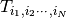
This notation is standard, but when considering lots of tensors multiply together, the expression is sometimes quite difficult to read and not easy to understand. This is where the graphical tensor notation is useful.
Usually, in the standard tensor network paper, the tensor notation is quite common and frequently used to explain the tensor network algorithms. Let’s take a look at it.
Each tensor constitude a node (sometimes it also called vertex in graph theory) and several bonds (legs) attach to it. The number of bonds represent the rank of a tensor.

For example as show in above, (a) represent a rank-0 tensor, which is a scalar. (b) is a rank-1 tensor which is a vector, (c) is a rank-2 tensor which is matrix and (d) is a rank-3 tensor.
6.1.1. Tensor Contraction¶
One of the most important operation of tensors is to multiply multiple tensors together, and summing over the indices. For example, consider three tensors 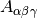 a rank-3 tensor, 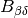 is a rank-2 tensor (matrix) and 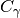 is a rank-1 tensor (vector) multiply together to get a rank-2 tensor 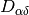 by summing over the common indices 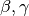. With einstain notation:
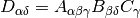
In the tensor notation, this is equivalent as the following diagram:
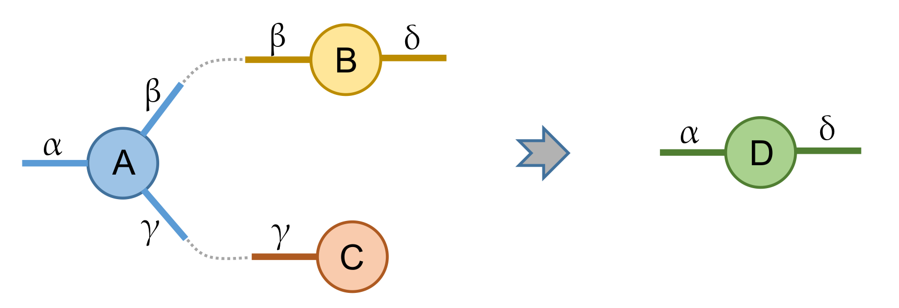{kind=link}
where the dash line indicate connetion of two bonds with the same indices. Summing over a index simply reprent by the connection of bonds and two (or more) tensors are called to contract together.
6.1.2. Direction of bond¶
Above, we have shown that every symbolic tensor notation can be represented by graphical tensor notation, and each bond can be interpreted as vector space. In quantum system, sometimes we want to indicate the physical space with bra (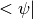) and ket (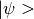). For example, a matrix can be generally represent as 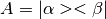, and ket can only multiply (contract) with a bra. In terms of tensor notation, we give each bond a direction (arrow) where bond with arrow pointing into the node indicates a ket and arrow pointing away from the node indicates a bra as shown in the following:
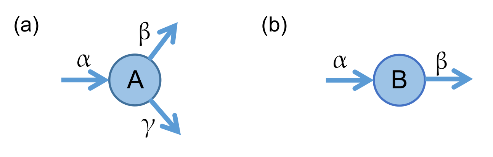{kind=link}
(a) indicate a rank-3 tensor 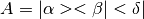 and (b) is a rank-2 tensor 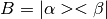. Just like in physics, a ket bond cannot multiply with a bra bond. In the tensor notation, this can be very straightforwardly presented, as two bonds with conflict direction cannot contract with each other, as shown in the following:

Note
Generally, each bond can represent different basis that is not interchangable, especially in the more complicated cases where each bond carries different quantum number.